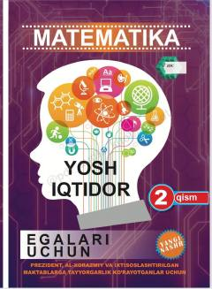

YIIxtisoslashtirilgan maktablarga kirish uchun matematika fanidan o'quv qo'llanma.
Ushbu o'quv qo'llanma Prezident, Al-Xorazmiy va boshqa ixtisoslashtirilgan maktablarga kirish imtihonlariga tayyorgarlik ko'rayotgan o'quvchilar uchun mo'ljallangan. Kitobning ikkinchi qismi matematika fanidan turli mavzularni, jumladan tenglamalar, geometrik shakllar va kasrlarni o'z ichiga olgan masalalar yechimini qamrab oladi.